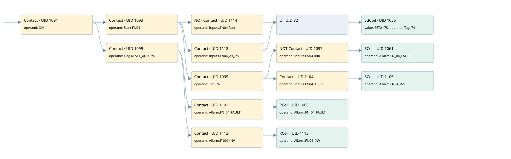

fn04
allarms 1 · 검색 색인 순서 29 · 원본 내부 NID 추정 31
백업 PLF 원본의 3059801 바이트 위치에서 복원한 XML. 검색 문서 1809의 객체 키 161022006f62000000000000와 연결했다. 이름 해석 16/16개. 남은 RefId는 상수 또는 미해석 참조다.
연결 구조 다시 그리기
원본 Part/PCon/Wire를 이용한 연결도다. TIA 화면의 래더 배치 또는 실행 결과를 재현한 그림은 아니다. 핀 연결은 아래 표와 원본 XML을 기준으로 읽는다. 노드 위에 마우스를 두면 피연산자 이름을 볼 수 있다.

접점·코일·블록과 피연산자
| Part UID | Gate | Negated 핀 | 연결 피연산자 |
|---|---|---|---|
| 1091 | Contact | operand = ON | |
| 1093 | Contact | operand = Start FN04 | |
| 1114 | Contact | operand | operand = Inputs.FN04 Run |
| 1118 | Contact | operand = Inputs.FN04_All_inv | |
| 32 | O | ||
| 1055 | SdCoil | value = S5T#17S; operand = Tag_74 | |
| 1095 | Contact | operand = Tag_74 | |
| 1097 | Contact | operand | operand = Inputs.FN04 Run |
| 1061 | SCoil | operand = Allarm.FN_04_FAULT | |
| 1104 | Contact | operand = Inputs.FN04_All_inv | |
| 1105 | SCoil | operand = Allarm.FN04_INV | |
| 1099 | Contact | operand = Flag.RESET_ALLARM | |
| 1101 | Contact | operand = Allarm.FN_04_FAULT | |
| 1066 | RCoil | operand = Allarm.FN_04_FAULT | |
| 1112 | Contact | operand = Allarm.FN04_INV | |
| 1113 | RCoil | operand = Allarm.FN04_INV |
접점 경로를 펼친 조건식
Contact·O/A·비교기의 원본 연결을 읽기 쉽게 펼친 보조 해석이다. POWER는 전원 레일 시작을 뜻한다. 호출 블록·에지·타이머의 내부 동작과 다중 쓰기 순서는 이 표로 실행 검증하지 않았다. 미해석 핀과 RefId는 원문 연결표에서 확인한다.
| UID | 동작 | 대상 | 원본 접점 경로 | 내용 |
|---|---|---|---|---|
| 1055 | SdCoil | Tag_74 | (((ON AND Start FN04) AND NOT [Inputs.FN04 Run]) OR ((ON AND Start FN04) AND Inputs.FN04_All_inv)) | 시간 동작 SdCoil; 타이머 의미 추가 확인 / 시간 인자 S5T#17S |
| 1061 | SCoil | Allarm.FN_04_FAULT | (((ON AND Start FN04) AND Tag_74) AND NOT [Inputs.FN04 Run]) | 조건 성립 시 Set |
| 1105 | SCoil | Allarm.FN04_INV | (((ON AND Start FN04) AND Tag_74) AND Inputs.FN04_All_inv) | 조건 성립 시 Set |
| 1066 | RCoil | Allarm.FN_04_FAULT | ((ON AND Flag.RESET_ALLARM) AND Allarm.FN_04_FAULT) | 조건 성립 시 Reset |
| 1113 | RCoil | Allarm.FN04_INV | ((ON AND Flag.RESET_ALLARM) AND Allarm.FN04_INV) | 조건 성립 시 Reset |
원본 배선 연결
| Wire UID | 동일 Wire 연결 끝점 |
|---|---|
| 1103 | Powerrail {} ↔ Part 1091.in |
| 1077 | ORef 1067 (ON) ↔ Part 1091.operand |
| 1092 | Part 1091.out ↔ Part 1093.in ↔ Part 1099.in |
| 1078 | ORef 1068 (Start FN04) ↔ Part 1093.operand |
| 1094 | Part 1093.out ↔ Part 1114.in ↔ Part 1118.in ↔ Part 1095.in |
| 1117 | ORef 1115 (Inputs.FN04 Run) ↔ Part 1114.operand |
| 23 | Part 1114.out ↔ Part 32.in1 |
| 1121 | ORef 1119 (Inputs.FN04_All_inv) ↔ Part 1118.operand |
| 33 | Part 1118.out ↔ Part 32.in2 |
| 34 | Part 32.out ↔ Part 1055.in |
| 1079 | ORef 1069 (S5T#17S) ↔ Part 1055.value |
| 1080 | ORef 1070 (Tag_74) ↔ Part 1055.operand |
| 1081 | ORef 1071 (Tag_74) ↔ Part 1095.operand |
| 21 | Part 1095.out ↔ Part 1097.in ↔ Part 1104.in |
| 1082 | ORef 1072 (Inputs.FN04 Run) ↔ Part 1097.operand |
| 1098 | Part 1097.out ↔ Part 1061.in |
| 1084 | ORef 1073 (Allarm.FN_04_FAULT) ↔ Part 1061.operand |
| 30 | ORef 31 (Inputs.FN04_All_inv) ↔ Part 1104.operand |
| 29 | Part 1104.out ↔ Part 1105.in |
| 1111 | ORef 1107 (Allarm.FN04_INV) ↔ Part 1105.operand |
| 1086 | ORef 1074 (Flag.RESET_ALLARM) ↔ Part 1099.operand |
| 22 | Part 1099.out ↔ Part 1101.in ↔ Part 1112.in |
| 1087 | ORef 1075 (Allarm.FN_04_FAULT) ↔ Part 1101.operand |
| 1102 | Part 1101.out ↔ Part 1066.in |
| 1089 | ORef 1076 (Allarm.FN_04_FAULT) ↔ Part 1066.operand |
| 24 | ORef 25 (Allarm.FN04_INV) ↔ Part 1112.operand |
| 26 | Part 1112.out ↔ Part 1113.in |
| 27 | ORef 28 (Allarm.FN04_INV) ↔ Part 1113.operand |
식별자 해석 근거 16개
| ORef UID | RefId | 이름 | IdentXmlPart 파일 | 해석 방법 |
|---|---|---|---|---|
| 1067 | 1 | ON | 0658-IdentXmlPart.xml | UID/RID + search-text + NID agreement |
| 1068 | 314 | Start FN04 | 0658-IdentXmlPart.xml | UID/RID + search-text + NID agreement |
| 1115 | 315 | Inputs.FN04 Run | 0657-IdentXmlPart.xml | UID/RID + search-text + NID agreement |
| 1119 | 316 | Inputs.FN04_All_inv | 0657-IdentXmlPart.xml | UID/RID + search-text + NID agreement |
| 1070 | 127 | Tag_74 | 0658-IdentXmlPart.xml | UID/RID + search-text + NID agreement |
| 1069 | 330 | S5T#17S | 0656-IdentXmlPart.xml | literal candidate: UID/RID/NID + nearby named declarations + search-text agreement |
| 1071 | 127 | Tag_74 | 0658-IdentXmlPart.xml | UID/RID + search-text + NID agreement |
| 1072 | 315 | Inputs.FN04 Run | 0657-IdentXmlPart.xml | UID/RID + search-text + NID agreement |
| 1073 | 129 | Allarm.FN_04_FAULT | 0657-IdentXmlPart.xml | UID/RID + search-text + NID agreement |
| 31 | 316 | Inputs.FN04_All_inv | 0657-IdentXmlPart.xml | UID/RID + search-text + NID agreement |
| 1107 | 231 | Allarm.FN04_INV | 0657-IdentXmlPart.xml | UID/RID + search-text + NID agreement |
| 1074 | 13 | Flag.RESET_ALLARM | 0657-IdentXmlPart.xml | UID/RID + search-text + NID agreement |
| 1075 | 129 | Allarm.FN_04_FAULT | 0657-IdentXmlPart.xml | UID/RID + search-text + NID agreement |
| 1076 | 129 | Allarm.FN_04_FAULT | 0657-IdentXmlPart.xml | UID/RID + search-text + NID agreement |
| 25 | 231 | Allarm.FN04_INV | 0657-IdentXmlPart.xml | UID/RID + search-text + NID agreement |
| 28 | 231 | Allarm.FN04_INV | 0657-IdentXmlPart.xml | UID/RID + search-text + NID agreement |
검색 코드 보조 자료
참조 명칭을 찾기 위한 자료이며 실행 순서나 AND/OR 관계는 위 연결표로 확인한다.
"on" "start fn04" "inputs"."fn04 run" "tag_74" s5t#17s "flag".reset_allarm "allarm".fn_04_fault "allarm".fn_04_fault "allarm".fn04_inv "allarm".fn04_inv "inputs".fn04_all_inv "tag_74" "inputs"."fn04 run" "allarm".fn_04_fault "inputs".fn04_all_inv "allarm".fn04_inv